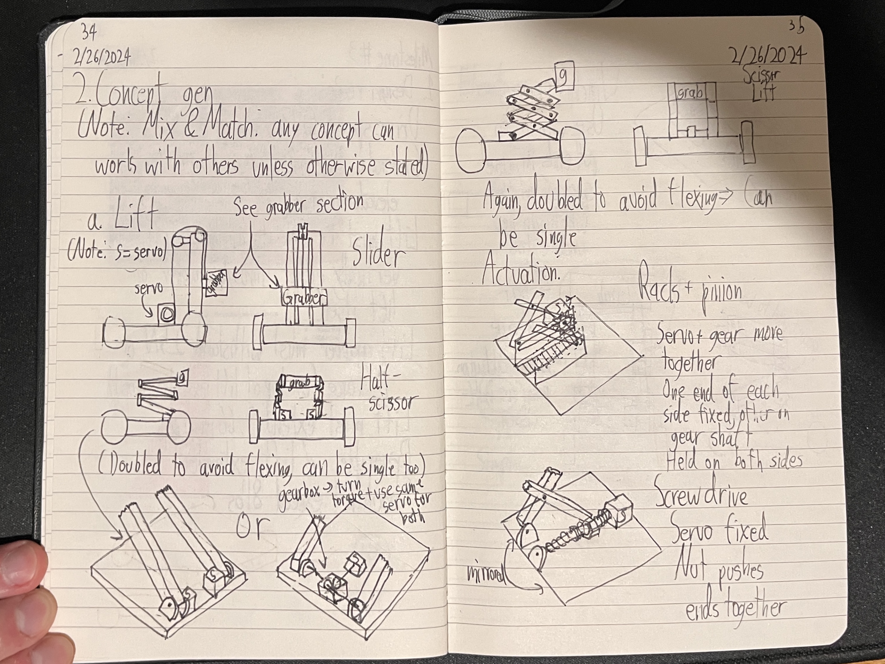

Class Competition Robot: Gurt
For one of my classes in Spring 2024, I was tasked with designing and manufacturing a robot to compete on a large game board in a livestreamed competition.
I ended up as a quarterfinalist, one of the 'Elite Eight,' out of a class of 170 people, and I scored the most points out of any fully-manual robot in the competition.
Project Goal and Planning
When the game board for the semester was revealed, I started my design process by looking into plans of action and what I could score given the competition's time limit. Out of all of the options for point scoring, I decided to pick acryllic rods from a rack, tilt the pendulum at the center of the game board for a multiplier, and turn the crank of a self-powered elevator. I knew I could re-use the lift mechanism from the pendulum for the rack if I designed it appropriately, so I only needed 2 major subsystems (crank and lift) and one small subsystem (grabber) on top of a wheelbase. I verified that all of this was possible based on some early weight estimates and data sheets for the available motors, along with cardboard mock-ups of the subsystems.
{kind=link}

Part of the notebook I used for planning
Subsystem Design
I decided on a scissor lift powered by a lead screw for the lift subsystem. I made a spring-loaded grabber for the acryllc rods, with its servo embedded in the top of the scissor lift. I then worked on the crank, which I referred to as the 'windmill.' I designed to fit tightly around the outside bumps on the crank wheel of the elevator. It was powered via chain and sprocket by two motors. I finished the robot with a chassis that I re-enforced with custom c-channels with cable management holes. Each subsystem of the robot required at least three design revisions, and they all operated smoothly by the time of the competition.

The scissor lift subsystem fully retracted

The scissor lift subsystem fully extended

An early iteration of the lead screw for the scissor lift

The final version of the grabber subsystem

The grabber subsystem on the scissor lift, now with cross-brace beams

Side view of the 'windmill' elevator crank

The underside of the robot base

The control board and battery for the robot
Final robot and competition results
I decided to name my robot Gurt, because I found it funny. I qualified for the livestreamed competition, which was a part of the MIT Mechanical Engineering Department's 150-year anniversary, and I ended up as a quarterfinalist.

Gurt fully asembled

Underside of Gurt

Demo Video for Gurt